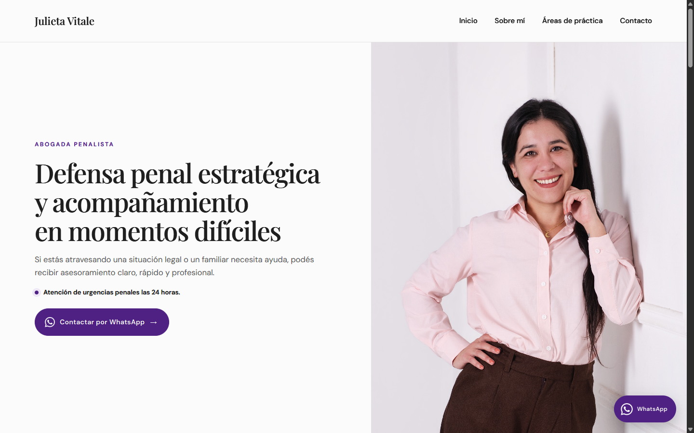

Vista del sitio web en producción: portada con navegación, síntesis de especialidad y acceso a urgencias.
SERVICIOS PROFESIONALES
Julieta Vitale
Una presentación clara de su práctica penal, con información organizada y acceso directo a consulta.
Alcance resuelto: Servicios · Perfil profesional · Contacto